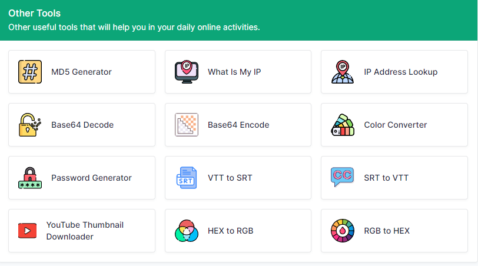

السلام عليكم ورحمة الله وبركاتة 👋
Hey Coders, Over the last decade, many of the more practical tasks have slowly but surely moved over to a Browser environment. In other words, something that used to require a specific program is now possible to do directly from the browser.
2. Image Converter
Convert any image into new format: JPG, PNG, GIF, BMP & WebP:

1. CSS Minifier
A simple tool to help you minify CSS code:

3. more tools
there are many tools you will need:

for more tips you can visit this wepsite :
click here my bro 👈